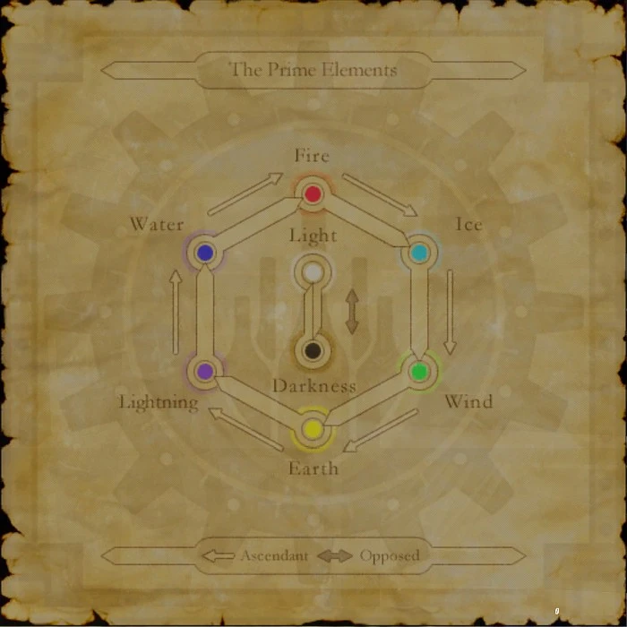

Level 75 reference · Zenith rules


Location:
Port Windurst (E-7)
Notes


Image source
- W-what? You don't want to see my chart of elemental correlations, do you? 'Cause if you do, well, I'm sorry, I don't know anything about such a thing. Eeew... Well, if you're going to be so pushy about it... Here, but only because you're begging me to show it to you... View the Chart of Elemental Correlations?
"Yes."
- [Displays a chart of elemental relationships] Okay, okay...hold your horses. This is strictly between you and me, all rightaru? Of course, you know about the prime elementals, rightaru? They are the eight elements or energies that control the universe. This chart shows their interrelationships. The six elements on the perimeter are in cyclical ascendancy over one another. Or, putting it simply-wimply: Water dominates fire, fire dominates ice, ice dominates wind...while wind dominates over earth, earth dominates lightning, and lightning dominates water. The two elements in the center, light and darkness, are in direct opposition to each other. Oh, and one other thing: these elements are also closely connected to your health condition! I can explain more about this if you're interested.
"Yes."
- Then listen up... Disease is to fire as paralysis is to ice, silence is to wind as petrification is to earth, and stun is to lightning as poison is to water. Finally there is charm, which is related to light, while blind, curse, and sleep are infused with the power of darkness. What all this means is this: if your armor resists certain elements, then it will also help prevent the status ailments tied to those elements. And there you have it... But remember, this is our little secret, rightaru? Come back and ask to see it again whenever you need to jog your memory.
"No."
- And there you have it... But remember, this is our little secret, rightaru? Come back and ask to see it again whenever you need to jog your memory.
"No."
- Well, that's your own choice. Just don't come crying to me when you try to put out a fire with powerful wind magic and end up creating a sea of flames instead!
Adapted from Eden Wiki: Yuhito-Kubhito · Contributors and history · CC BY-SA 4.0. Revision 29432. Layout, links and optional background text adapted for Zenith.